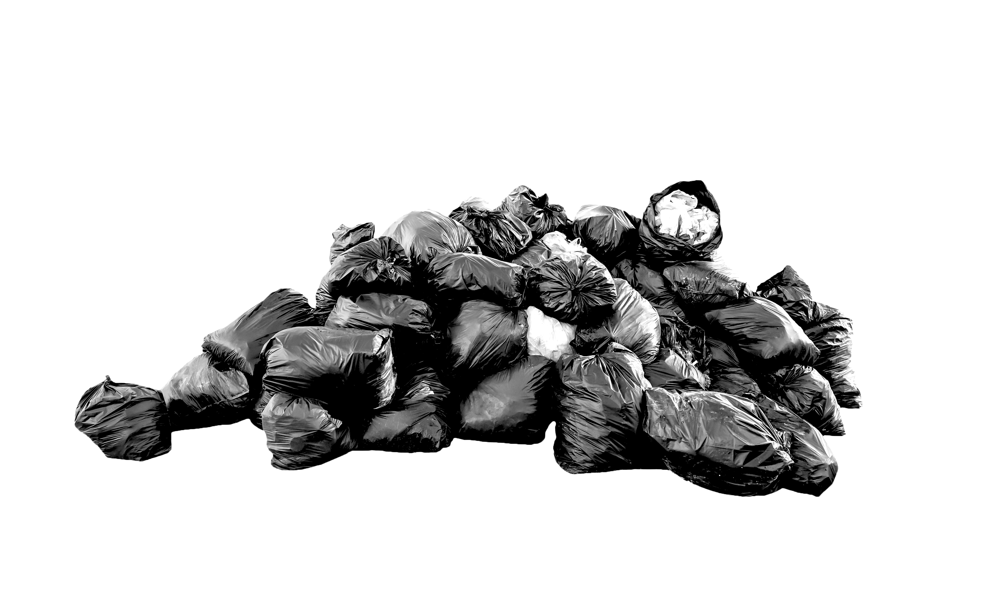

ไหวบ่ ? บ่อขยะ
บ่อขยะในกรุงเทพอาจจะมีปริมาณไม่เพียงพอ ขยะจะล้นเมือง
ถ้าคนกรุงเทพยังมีพฤติกรรมการบริโภคแบบเดิมๆ และยังไม่มีวิธีการแยกและกำจัดขยะที่เป็นระบบ
คุณรู้ไหมว่า...?
คุณสร้างขยะไปเยอะแค่ไหน?
คุณอายุ ปี
ในปี 2561 โดยเฉลี่ยแล้วคนกรุงเทพ 1 คน สร้างขยะ 1.88 กิโลกรัม ต่อวัน
คุณสร้างขยะไปแล้ว ตัน
กรุงเทพผลิตขยะเท่าไหร่
กรุงเทพผลิตขยะเท่าไหร่
ข้อมูลจากสำนักสิ่งแวดล้อม กรุงเทพฯ ระบุว่า ขยะมูลฝอยในกรุงเทพมีปริมาณมากขึ้นทุกปี โดยในปี 2561 กรุงเทพฯ ผลิตขยะมากถึง 3,907,625 ตันต่อปี
ซึ่งเพิ่มขึ้นจากปี 2560 ถึง 65,299 ตัน แม้ว่าปริมาณขยะดังกล่าวจะเพิ่มขึ้นในปริมาณที่ลดลงจากปี 2559 แต่ก็มีการคาดการณ์ว่าปริมาณขยะต่อปีจะยังไม่ลดลง หากคนกรุงเทพฯ ยังไม่เริ่มปรับเปลี่ยนพฤติกรรม และยังไม่มีมาตรการใดๆ มาสร้างแรงจูงใจหรือปรับเปลี่ยนพฤติกรรมคน
แล้วคุณรู้หรือไม่ว่า ?
ขยะแต่ละชิ้นที่ปล่อยจากมือคุณมันเดินทางไปที่ไหนต่อ?
เส้นทางขยะจากกรุงเทพ

ข้อมูลจาก : https://www.thebangkokinsight.com/193971/
ปัจจุบัน กรุงเทพมี


มารับและขนส่งขยะเหล่านั้นออกไป จากย่านที่ชุมชนแล้วเอาไว้ที่บ่อขยะเหล่านี้ เพื่อ ฝังกลบ?
แต่คุณรู้หรือไม่ว่า ?
บ่อขยะที่มีอยู่ในกรุงเทพตอนนี้
มีความสามารถในการรองรับขยะแค่ไหน
ปริมาณขยะมูลฝอยแต่ละเขต
2560
จำนวนประชากรแต่ละเขต
หากปริมาณขยะเพิ่มขึ้นเรื่อยๆ โดยยังไม่ทำอะไรในอีก ... ปี
ก็ต้องหาบ่อขยะแห่งอื่นมารองรับขยะฝังกลบเหล่านี้
XXX ตร.กม.
เขต A
เขต B
เขต C
เขต D
เขต E
เขต F
Y
Z
=
+
THAILAND
SWEDEN
TAIWAN
GERMANY
โร้ดแมพการลดขยะของกทม. และความสำเร็จในการลดขนะในต่างประเทศ
ตามรายงานของสำนักสิ่งแวดล้อม กทม. พบว่า ขยะในกรุงเทพมีเพิ่มขึ้นทุกปีโดยสาเหตุเกิด
จาก...
อันที่จริงแล้ว กทม.ก็มีโร้ดแมพในการลดขยะ และกำลังอยู่ในขั้นตอนการดำเนินการ
มาดูกันว่ากรุงเทพทำอะไรไปแล้วบ้างมีอะไรที่ยังไม่ได้ทำและต่างประเทศเขาทำอะไปถึงไหน
แล้ว
สรุปสุดท้าย --- บ่อขยะในกรุงเทพอาจจะมีปริมาณไม่เพียงพอ ขยะจะล้นเมือง
ถ้าคนกรุงเทพยังบริโภคในปริมาณเท่าเดิมและยังไม่มีการวิธีแยกและกำจัดขยะที่เป็นระบบ
สรุปปิดท้าย: ตั้งคำถามกับคนอ่าน และเรียกร้องให้มีแอคชั่นบางอย่าง
โร้ดแมพนี้ช้าไปไหม เมื่อเทียบกับปริมาณการขยะที่เพิ่มสูงขึ้น จำนวนประชากรในกรุงเทพที่มีมากขึ้นในทุกๆปีเราต้อง
ใช้พื้นที่ และงบประมาณอีกเท่าไหร่ในการกำจัดขยะที่แยกไม่ถูกวิธี
ไหวบ่? บ่อขยะที่รองรับขยะจากกรุงเทพอาจไม่ไหวแล้ว ถ้าเราไม่เปลี่ยนแปลงพฤติกรรม และเรียกร้องให้ภครัฐออก
กฏหมายหรือนโยบายเพื่อแก้ปัญหาขยะตั้งแต่ตอนนี้
ACT NOW!
| Kade Thossaphonpaisan | Journalist |
| Kan Ouivirach | Programmer/Coder |
| Monsicha Srisuantang | Graphic Designer |
| Santichai Apornsri | Team Coach |
This Project is a part of Data Journalism Workshop 2020